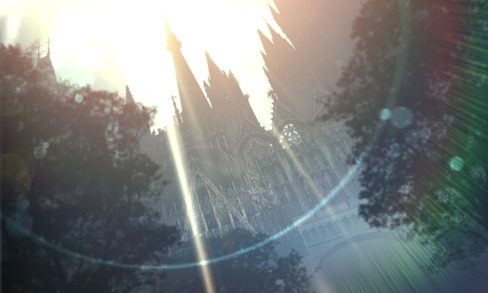
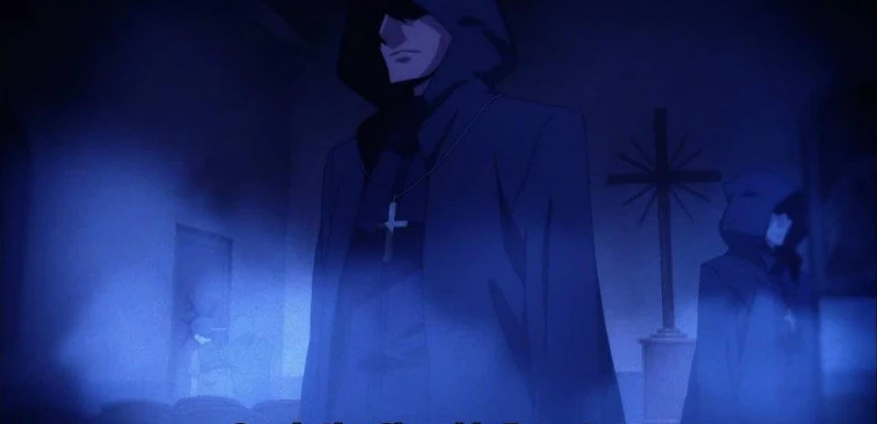

The Holy Church, also referred simply as the Church, is the hidden side of the Roman Catholic Church that specializes in the hunting of heresy.
Compared to the public side of the Holy Church that treats heresies as if they do not exist because those who teach the word of God must not acknowledge that which runs counter to their doctrines. The Holy Church contains the zealots who feel the heresies should be more proactively destroyed. They are a major force that has a tenuous relationship with The Mage's Association.
|  |
|---|
| The Church |
Those who insult God, kill people, mislead the public, and twist the very Laws of Nature by occult means fall under the umbrella of “heretics” and are targets for the Church’s forces.
The Holy Church are one of the very few organizations larger in scale than The Clock Tower
They are the largest organization in the World of Magecraft.
While being a religious organization, the Holy Church is dedicated to "protecting the works of man in the name of the Lord", fighting to protect human society even in nations where most of the population does not follow the Christian religion
While the Association seeks to conceal Mystery from the public and preserve it, the Church attempts to “properly manage” it, destroying any Mysteries they deem as heresy. While the Church generally abides by the policy of concealing Mystery that the Association enforces, It does not really care. Some of the magecraft it employs, namely the Baptism Rites are basically public. However they have been covert even before the Association chose to conceal magecraft about their Anti-Vampire Activities.
While the Holy Church has spent most of its history in open and violent conflict with the Mage's Association, in recent years the organizations have come to a truce, forming a non-aggression pact.
the members of the Church share a common ideology. The singular bond of faith puts the Church above the constant infighting and atmosphere of mutual distrust found in the Association. While Church’s members disagree on and debate their differing interpretations of doctrine, this amounts to nothing more than reasonable discussions (Crazy I know) on how to become better people.
the Church's Teachings and Holy Words, is the most widespread and well stabilized Thaumaturgical Foundation in the World. It makes possible the use of Sacraments.
In the Holy Church, it is considered taboo to use the terminology preferred by magi due to the organization’s long-standing conflict with the Mage’s Association. Members of the Church therefore refer to magical energy as "holy energy", and so Sacraments are simply a blanket statement that encompasses all Magecraft they use.
Officially the Church does not even teach any spells but the Baptism Rite.
The Assembly of the Eighth Sacrament is a special agency made up of a group of special clerics charged with the research, recovery, and managing of holy relics scattered across the globe. The members follow the "Eighth Sacrament" outside of the Sacraments of the Catholic Church, the seven graces that God bestowed: Baptism, Holy Eucharist, Matrimony, Holy Orders, Confirmation, Penance, Anointing. It is a "power separated from the faith", meaning the members trained to retrieve the hidden relics do not fear being involved in heretical power such as magecraft to accomplish their goals.
The Executors are the heretic inquisitors of the Holy Church established by the 120th Cardinal. They have the task of demon killing and the destruction of other heretical beings.
It is known as the bloodiest department of the Church, called the Shura's Den for its responsibility of punishing heresies. It takes a certain amount of willpower to be part of it, and being able to achieve the title of "Executor" signifies that one is a first-rate murderer that has passed brutal and pious training to become mankind's weapon.
One of the ironclad rules of the Holy Church is that Executors operating in the field are granted complete independent authority to resolve the incident until their task is complete, and not even someone at the top of the organization’s hierarchy have the authority to interfere with them while they are under this protection. Despite this high degree of autonomy, the Executors are of low rank in the Church’s hierarchy. They are disposable soldiers who exist to fight and die on the battlefield.
The Executors also follow the "Eighth Sacrament" granting the permit to stray away from the rules of their religion as long as one thing, the name of the Almighty, is protected. They are followers that do not teach the words of the Lord, but act as His representative, His Executors, despite being mere mortals.
|  |
|---|
| The Executors of the Holy Church. |
The Burial Agency is a group of special Inquisitors gathered by the Holy Church. A secret division of the Holy Church, an organization of Europe's prominent religion whose name means "universal".
It comprises seven Executors. A walking Armory; a security force consisting of a mere handful of people. They are in charge of exterminating the "inhuman things" that never show themselves, which the Church condemned as heresies — Vampires.
When it comes to the Executors of the Burial Agency, they will stop at nothing if it's to apprehend a Dead Apostle, even having a whole town disappear from the map. They have the authority where whatever they do is allowed if their opponent is a vampire, and that includes the city targeted by the Dead Apostle: whether humans still live there or not, if it's an already defiled land, they will burn it down all the same. For the Burial Agency, being a non-human Prime Species is on its own "evil".
"Prime Species" refers simply to a world's dominant species, and does not necessarily imply the intelligence to form civilization.
There is an eighth reserve member, but they are not granted the same privilege. The privilege of independent action permitted by the Archbishop are the 7 members only, therefore it was decided that adding more than that would be dangerous.
The Chivalric Orders are the Knights that make up the main military body of each church. They only fight to defend holy ground. They are known for using halberds, but the weapon's popularity is dying out among them.
Some Knights of the Chivalric Orders are also involved in training Executors.
Exorcists are a special kind of priests charged as "representatives" by the bishop of a diocese. They are a type of Executor not geared for heretic hunting, but rather answer pleas for help and visit those towns to exorcise Daemons (not to be confused with demons) using their Baptism Rite.
While the mere likes of humans are no match for a mature Daemon, the real problem for the visiting Exorcists is the protection of the soul. The experience of Daemon exorcism is said to be one that a person cannot withstand more than once, making an iron faith more sought after than physical prowess. The Exorcists don't fear Daemons, but rather they fear the breaking of their will. There is only one known account of a mature Daemon being exorcised.
The Order of the Templars s a small but powerful faction in the Church. Although they have a considerable amount of connections and allegiance to the Church, the Order of the Templars is often not part of the Church. They are in truth a separate independent organization of their own and hold only loyalty to themselves.
The Templars are considered to be far more radical, bordering the line of terrorism in their activities, as they hire criminals to work for them or even join their ranks. They seem to specialize in heretic hunting and often lend some of their own Heretic Hunters to the Holy Church, when necessary.
Wraith, also referred to as Ghosts or Human Spirits, are souls of dead people that remain attached to this world due to past grudges, regrets and other sorts of unfinished business that they had during life. However, as they are no longer something that belongs to this world, their existence is something that degrades with time and they are bound to disappear eventually.
Normally, direct physical interference on the part of these Ghosts are low. As Spiritual Bodies they usually have to act through some sort of medium.
As Human Spirits they are able to consume the souls and minds of people and convert them into energy. The basic abilities they had from the time when they where alive still remain but they don't change from such nourishment, as they only become tougher as their Magical Energy capacity increases.
Demons are existences that, while being of the Laws of Nature, disturb its flow. The distortion that these cause to their surroundings is rather high, requiring them to be put down.
The Sixth Imaginary Factor also known as Daemons, is a force that reacts to the desires of humans and births Daemons out of their wishes. It needs a form, invented by humans, in order to materialize itself as a passive existence. This passive existence is an individual Daemon and not a True Daemon.
But regardless of the result, as a rule, Daemons are gentle. They are the Imaginary Factor that understands one's pain and attempts to remove it. Depending on perspective, one can say that they are allies of humanity. They act to realize the wishes they come to be invested within by distorted means.
In general, a Daemon usually takes possession of the human that birthed it. But in the event that the mind of the host cannot withstand the strain, it is common for the self-destruction of the host to occur, dispersing the essence of the Daemon into the vicinity. Upon possession by a daemon, irregularities manifest in the the victim's body, eventually rendering them as grotesque monsters by the metamorphosis of the flesh, once this process is complete they become a mature Daemon.
Daemons need something called a Unit Designation to be free, while True Daemons don't, what does that mean? what are true daemons exactly? idk, this is not something very well explored in the nasuverse all we know is True Daemons strong a fuckload.
Anyone who studied magecraft knows this, whether from the Mage's Association, the church, or a standalone guy.
Info known by higher positions or specific fields in The Mage's Association.
Info known by people of the church.
Info known by Specific divisions of the Church.